Damit die Wohnung läuft, auch wenn du nicht da bist.
hauswart ist die selbst gehostete Wohnungsverwaltung für deinen Haushalt: Wartung mit Nachweis, wer was gemacht hat, Geräte und Garantien, Mängel, Ersatzteile und eine Dokumentation, mit der jemand anderes übernehmen kann.
Ein Docker-Container · SQLite · Deutsch und Englisch · keine Cloud nötig
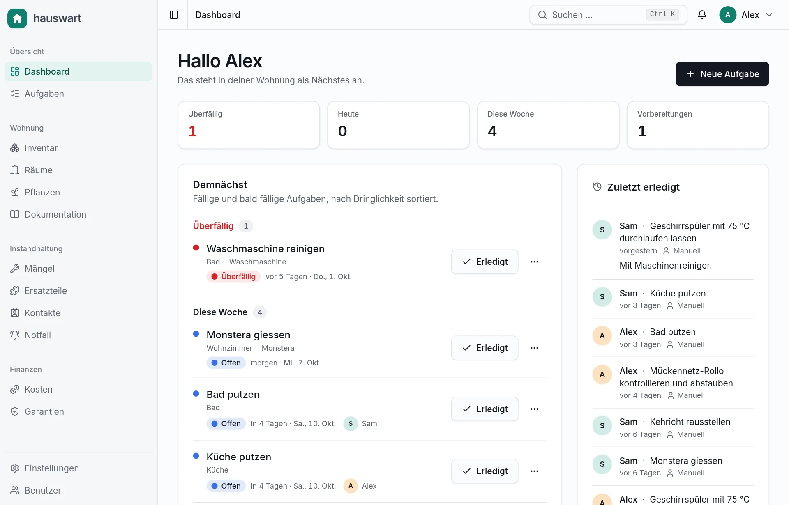
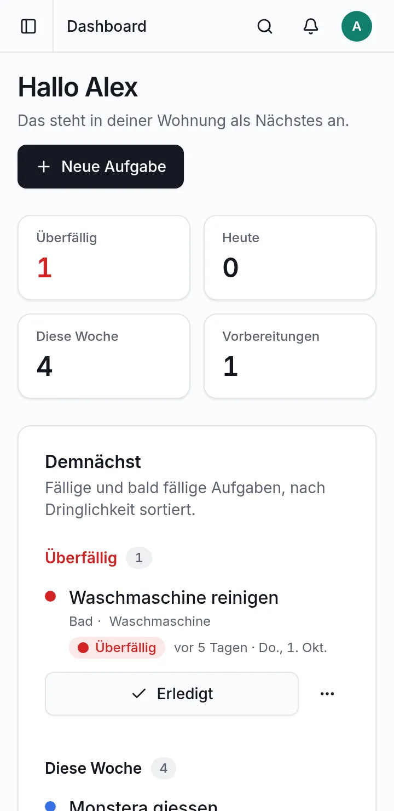
Alle Bildschirmfotos zeigen die deutsche Oberfläche mit erfundenen Demo-Daten.
-
Selbst gehostet
Deine Daten liegen in einer SQLite-Datei auf deinem Server.
-
Ein Haushalt, mehrere Personen
Alle sehen dasselbe und wissen, wer was erledigt hat.
-
Offene Schnittstellen
REST-API mit OpenAPI-Beschreibung und ein MCP-Server.
-
Für das Handy gebaut
Ab 360 px Breite, mit dunklem Modus und QR-Codes an den Geräten.
Alles, was eine Wohnung am Laufen hält
Von der Filterwechsel-Erinnerung bis zur Übergabe-Mappe für die Vertretung: ein Ort statt Zettel, Chatverläufe und Gedächtnis.
Aufgaben, die sich selbst erinnern
Jede Aufgabe hat einen Rhythmus, der zur Wohnung passt, und hält fest, wer sie erledigt hat. Eine Erledigung ist ein Nachweis mit Datum, Person und Notiz. Ein Versehen machst du in den ersten sieben Tagen rückgängig.
- Überfällig, heute, diese Woche: das Dashboard sortiert nach Dringlichkeit
- Putzen und Kehricht im Wechsel, fair nach Aufwand verteilt
- Vorbereitungen mit Vorlauf, etwa den Ersatzfilter rechtzeitig bestellen
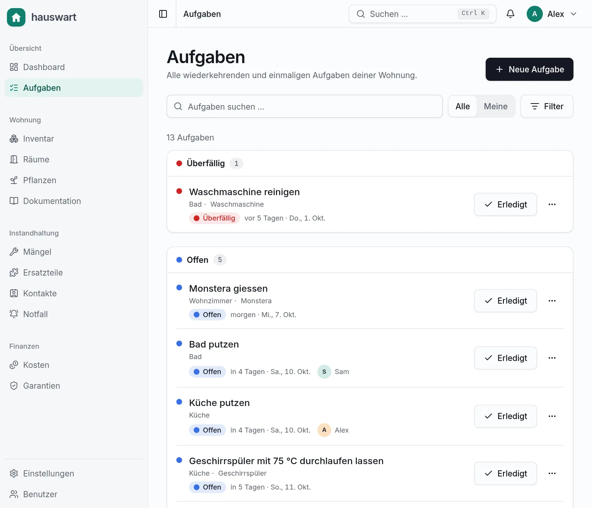
Der Rhythmus, vorgerechnet bevor du speicherst
Intervalle, Mindesthäufigkeiten, Kalender, Saisons und Zähler lassen sich kombinieren. Die Vorschau formuliert den Rhythmus in einem Satz und zeigt, wann die Aufgabe das nächste Mal fällig wird.
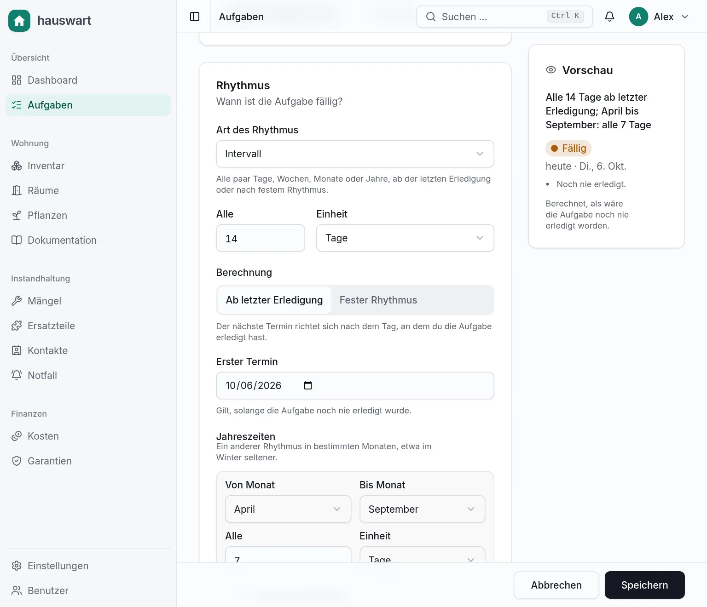
Beispiele aus dem Alltag
-
Mückennetz-Rollo
Mindestens einmal pro Monat kontrollieren und abstauben.
-
Flusensieb der Waschmaschine
Alle 5 Waschgänge, gezählt über einen Zähler in Home Assistant.
-
Lüftungsfilter
Alle 6 Monate wechseln. Der Ersatz wird 3 Wochen vorher zum Bestellen angezeigt.
-
Aktivkohlefilter der Dunstabzugshaube
Alle 3 Monate ersetzen, mit Ersatzteil und Lagerbestand verknüpft.
-
Pflanzen giessen
Im Sommer alle 7 Tage, im Winter alle 14 Tage.
-
Putzen und Kehricht
Wöchentlich im Wechsel. Die Abfuhrdaten kommen aus einem Kalender.
-
Geschirrspüler mit 75 °C
Einmal pro Woche leer laufen lassen, damit Filter und Dichtungen sauber bleiben.
-
Hausregeln und Pflegehinweise
Jedes Gerät trägt Regeln, Tipps und Warnungen, die beim Gerät angezeigt werden.
Jedes Gerät hat eine Seite
Eckdaten, Garantie-Ampel, Pflegehinweise, Kontakte zum Kundendienst, Ersatzteile und die Servicehistorie an einem Ort. Ein QR-Code zum Aufkleben führt direkt dorthin. Derselbe Link lässt sich auch auf einen NFC-Tag schreiben.
- Garantie: gültig, läuft in 90 Tagen ab oder abgelaufen
- Pflegehinweise als Regel, Tipp oder Warnung, auch mit Foto
- Kontakte mit Rolle: Support, Installateur, Verkäufer, Service
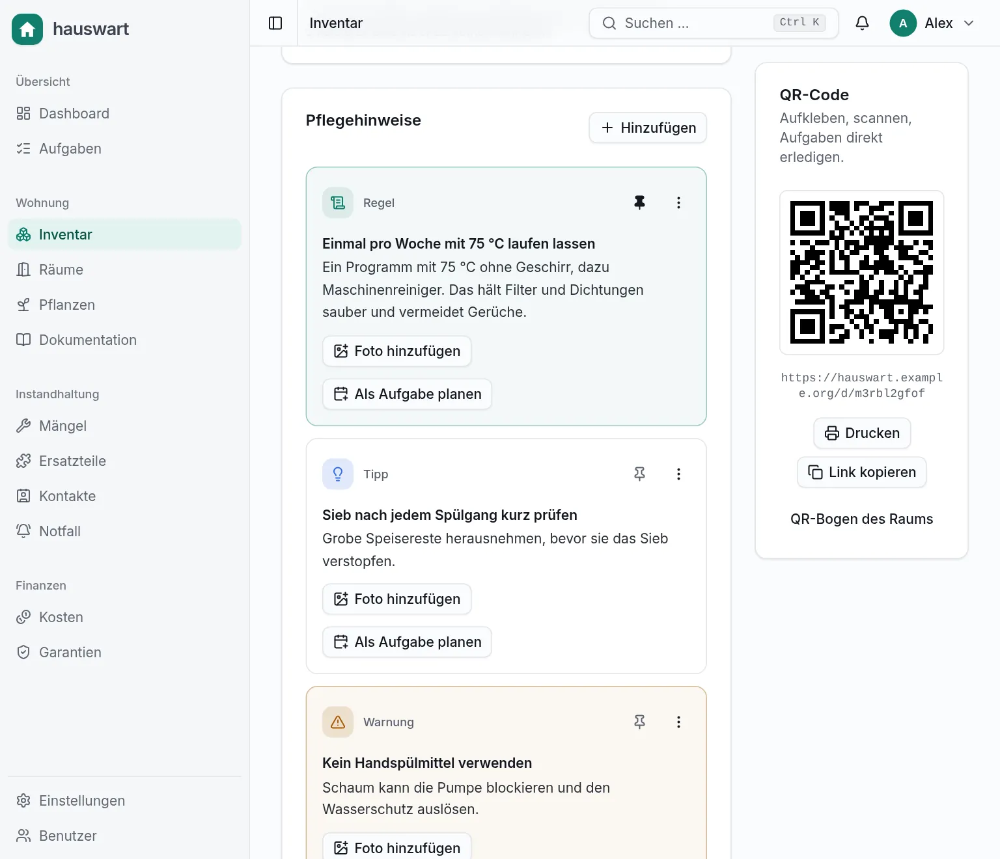
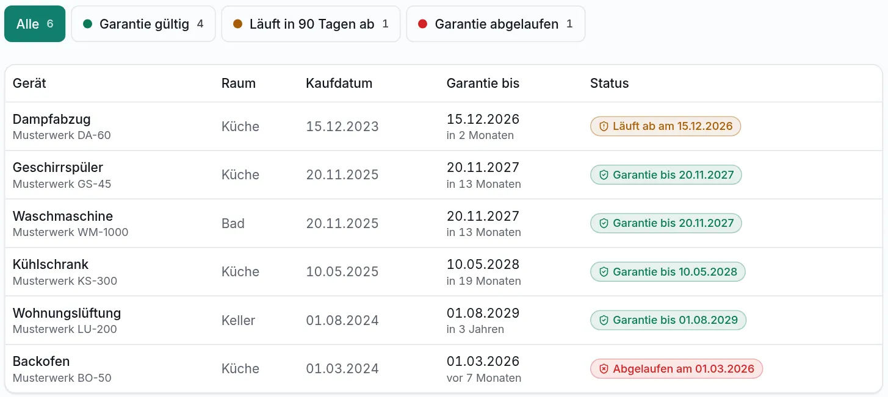
Vom Entdecken bis zur Behebung lückenlos
Erfasse einen Mangel mit Ort und Dringlichkeit, melde ihn der Verwaltung und verfolge ihn durch den Status-Ablauf. Die Frist wird ab dem Übergabedatum berechnet, und eine Erinnerung hält sie im Blick.
- Verlauf mit Statuswechseln, Korrespondenz und Kommentaren
- Zuständiger Kontakt und Frist pro Mangel
- Mängelliste als PDF zum Weitergeben
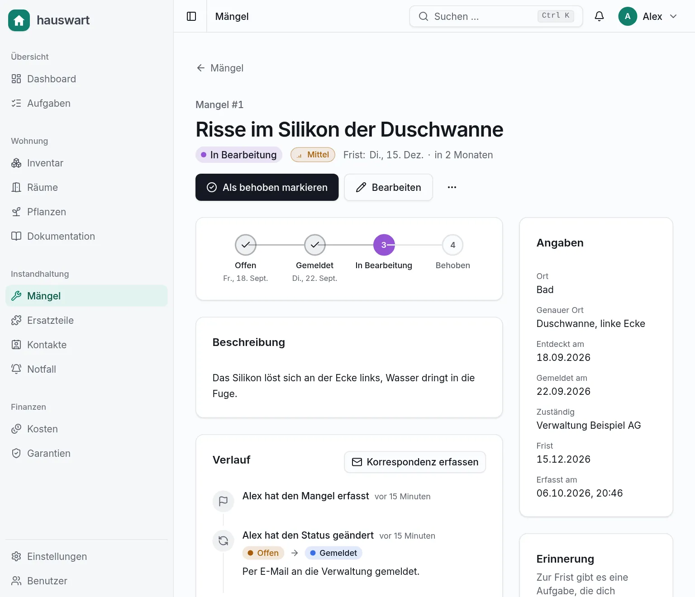
Eine Mappe, mit der jemand anderes übernehmen kann
Schreibe Anleitungen und Regeln in Markdown, mit Fotos, PDFs und Hinweisboxen. Vertrauliches wie das WLAN-Passwort kommt in einen Geheim-Block, der Gästen nie angezeigt wird. Seiten verlinkst du untereinander, und die Suche findet alles.
- Markdown mit Inhaltsverzeichnis, Versionen und Rückverweisen
- Volltextsuche über Seiten, Geräte, Aufgaben, Mängel und Kontakte
- Notfallblatt und Gästelinks mit PIN und Ablaufdatum In Arbeit
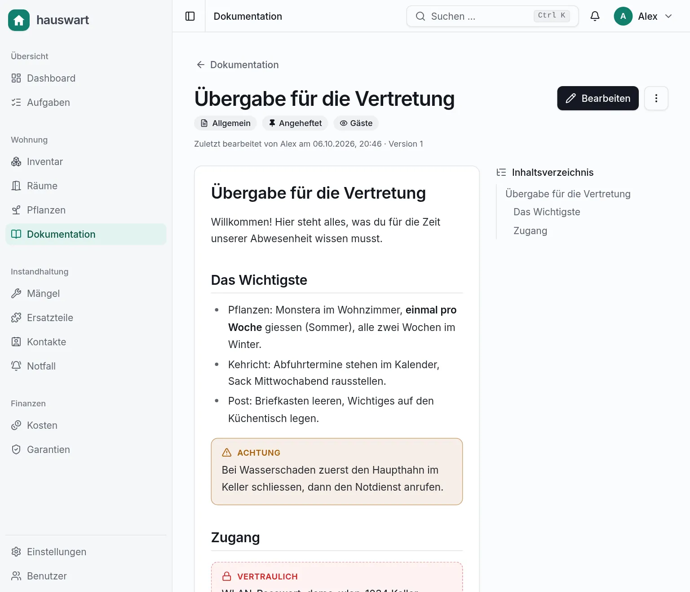
«Jetzt bestellen» rechnet für dich
Verknüpfe Teile mit Geräten und Aufgaben. hauswart vergleicht Bestand, Bedarf und Lieferzeit und zeigt dir, was du bis wann bestellen musst. Eine Erledigung bucht das verbrauchte Teil automatisch aus dem Bestand.
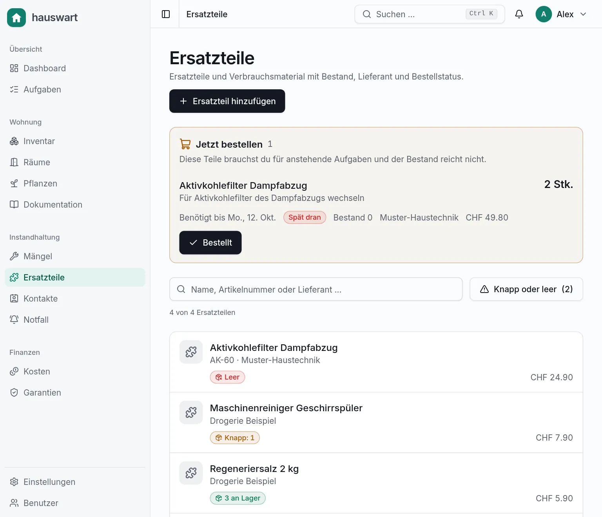
Die Details, die den Alltag leichter machen
Push mit «Erledigt»-Taste
Über Home Assistant landet die Erinnerung auf dem Handy. Ein Tipp auf «Erledigt» verbucht die Aufgabe auf deinen Namen.
VerfügbarKommentare überall
Aufgaben, Geräte, Mängel, Hinweise und Seiten lassen sich kommentieren. Die anderen werden benachrichtigt.
VerfügbarKontakte und Servicehistorie
Wer hat den Zulaufschlauch ersetzt, und wen rufst du an? Beides steht beim Gerät.
VerfügbarBackup und Dateien
Täglich eine konsistente Datenbankkopie plus Spiegel der hochgeladenen Dateien. Bilder werden ohne Metadaten gespeichert.
VerfügbarKalender-Feeds (iCal)
Fällige Aufgaben im eigenen Kalender abonnieren.
In ArbeitKosten und Verteilung
Ausgaben pro Gerät erfassen und nach Eigentumsanteilen aufteilen.
In ArbeitVolltextsuche
Strg + K durchsucht Seiten, Geräte, Aufgaben, Mängel, Kontakte und Teile. Geheim-Blöcke landen nie im Suchindex.
VerfügbarZweisprachig, hell und dunkel
Die Oberfläche gibt es auf Deutsch und Englisch, im hellen und im dunklen Modus.
VerfügbarAm Handy zu Hause
Aufgabe abhaken, Ersatzteil bestellen, Pflegehinweis nachlesen: alles ist für schmale Bildschirme ab 360 px gebaut, im hellen und im dunklen Modus.
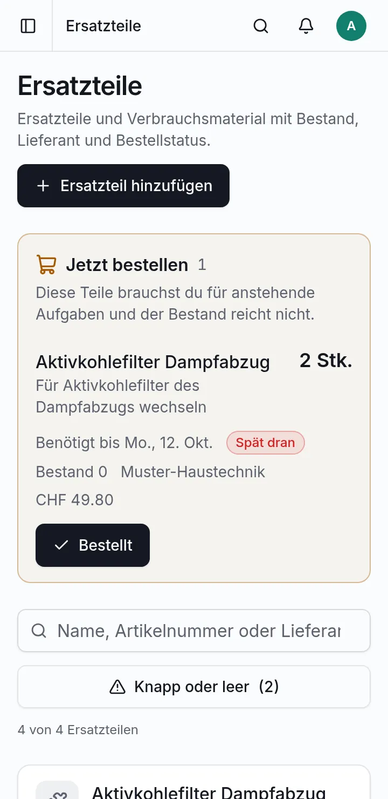
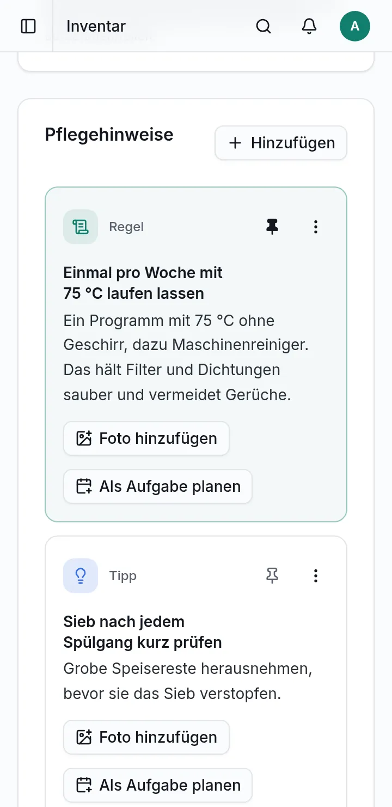
Spielt mit deinem Zuhause zusammen
Alles ist optional: hauswart läuft auch ohne eine einzige Verbindung. Wo du sie einrichtest, werden Aufgaben schlauer.
-
Home Assistant
Zähler und Zustände lesen, Aufgaben automatisch erledigen, Abfuhrdaten aus Kalendern holen und Push-Nachrichten mit «Erledigt»-Taste senden.
Verfügbar -
Paperless-ngx
Belege, Handbücher und Garantiescheine direkt an Geräte und Mängel hängen.
In Arbeit -
Kept
Kosten und Garantien mit der selbst gehosteten Finanz-App abgleichen.
In Arbeit
Alles ist per API erreichbar
Die Weboberfläche nutzt dieselbe REST-API wie Home Assistant, die geplante Mobile-App und deine eigenen Skripte. Der Vertrag ist als OpenAPI 3.1 beschrieben.
MCP-Server für Claude und Co.
Verbinde einen KI-Assistenten und frage ihn nach deiner Wohnung oder lass ihn Dinge erledigen. Die Werkzeuge sind auf Aufgaben zugeschnitten: nachschauen, erledigen, Mängel melden, Bestand buchen, kommentieren.
Registrieren, zum Beispiel in Claude Code:
claude mcp add hauswart \
--env HAUSWART_URL=https://hauswart.example.org \
--env HAUSWART_TOKEN=hw_… \
-- /path/to/hauswart-mcpTokens mit Berechtigungen: Mit einem reinen Lese-Token sieht ein Client gar keine Schreib-Werkzeuge.
Ein Aufruf mit Token:
$ curl -H "Authorization: Bearer hw_…" \
https://hauswart.example.org/api/v1/dashboardFrühe Entwicklung, mit solidem Fundament
hauswart hat noch kein stabiles Release. Der Kern steht und ist durchgetestet, aber Schnittstellen und Datenmodell können sich noch ändern. Sichere deine Daten und probiere es zuerst aus.
Funktioniert heute
- Aufgaben mit Rhythmus-Editor, Erledigungen, Dashboard und Benachrichtigungen
- Geräte, Räume, Pflanzen, Garantien, Pflegehinweise und QR-Codes
- Mängel mit Status-Ablauf, Fristen und PDF-Export
- Dokumentation, Suche, Ersatzteile, Kontakte, Servicehistorie, Kommentare
- Home Assistant: Messwerte, Automatik, Push mit «Erledigt»-Taste
- REST-API, OpenAPI-Beschreibung und MCP-Server
Noch nicht oder in Arbeit
- Kosten und Aufteilung
- iCal-Feeds
- Notfallblatt und Gästelinks mit PIN
- Paperless-ngx- und Kept-Anbindung (teilweise)
- Zwei-Faktor-Anmeldung, Passkeys und Passwort-Selbstverwaltung
- Native Mobile-App (die API steht bereit)
In fünf Minuten läuft es
hauswart ist ein einziger Docker-Container mit SQLite. Das Image baust du aus dem Repository.
-
Bauen und starten
Klone das Repository, baue das Image und starte den Container. Ein Volume hält Datenbank und Dateien.
-
Setup öffnen
Rufe die Adresse im Browser auf. Beim ersten Besuch legst du das Administratorkonto an.
-
Beispieldaten laden (optional)
Erstelle unter Einstellungen einen API-Token und importiere eine Beispielwohnung, um alles auszuprobieren.
git clone https://github.com/OrellBuehler/hauswart.git
cd hauswart
docker build -t hauswart .
docker run -d --name hauswart -p 3000:3000 \
-v hauswart-data:/data \
-e HAUSWART_SECRET_KEY="$(openssl rand -base64 32)" \
-e ORIGIN=http://localhost:3000 \
-e HAUSWART_COOKIE_SECURE=false \
hauswart
Hinter einem Reverse-Proxy setzt du ORIGIN auf die
öffentliche Adresse, zum Beispiel
https://hauswart.example.org. Den geheimen
Schlüssel musst du aufbewahren: Er verschlüsselt gespeicherte
Zugangsdaten.
Häufige Fragen
Ist hauswart schon fertig?
Nein. Es ist in früher Entwicklung und hat noch kein stabiles Release. Die Kernfunktionen laufen, anderes fehlt noch, siehe «Ehrlicher Stand». Rechne damit, dass sich Schnittstellen und Datenmodell noch ändern.
Brauche ich Home Assistant?
Nein. Home Assistant, Paperless-ngx und Kept sind optionale Anbindungen. Ohne Home Assistant funktionieren Aufgaben mit festen Rhythmen, Dokumentation, Geräte und Mängel wie gewohnt. Nur zähler- und zustandsbasierte Auslöser brauchen Messwerte.
Für wie viele Haushalte ist es gedacht?
Für genau einen Haushalt mit einigen Personen. Alle Wohnungsdaten sind für alle Konten gemeinsam. Nur Sitzungen, API-Tokens, Verbindungen und persönliche Einstellungen gehören einer einzelnen Person.
Wo liegen meine Daten?
In einer SQLite-Datei und einem Ordner für hochgeladene Dateien, beide im Docker-Volume auf deinem Server. Täglich entsteht ein Backup, und hauswart sendet keine Nutzungsdaten an Dritte.
Unter welcher Lizenz steht es?
Unter der PolyForm Noncommercial License 1.0.0. Privat und für andere nicht-kommerzielle Zwecke ist die Nutzung frei. Der Quellcode ist einsehbar, die Lizenz ist aber keine OSI-Open-Source-Lizenz.
Gibt es eine Mobile-App?
Noch nicht. Die REST-API ist dafür vorbereitet, und die Weboberfläche funktioniert ab 360 px Breite gut auf dem Handy.
Kann ich einen KI-Assistenten anbinden?
Ja, über den mitgelieferten MCP-Server. Du legst einen Token mit den gewünschten Berechtigungen an, und der Assistent sieht nur die Werkzeuge, die dazu passen.
Probiere hauswart in deiner Wohnung aus
Frühe Entwicklung heisst: Rückmeldungen sind besonders wertvoll. Schau dir den Code an, starte den Container und erzähl, was fehlt.